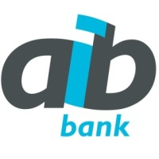
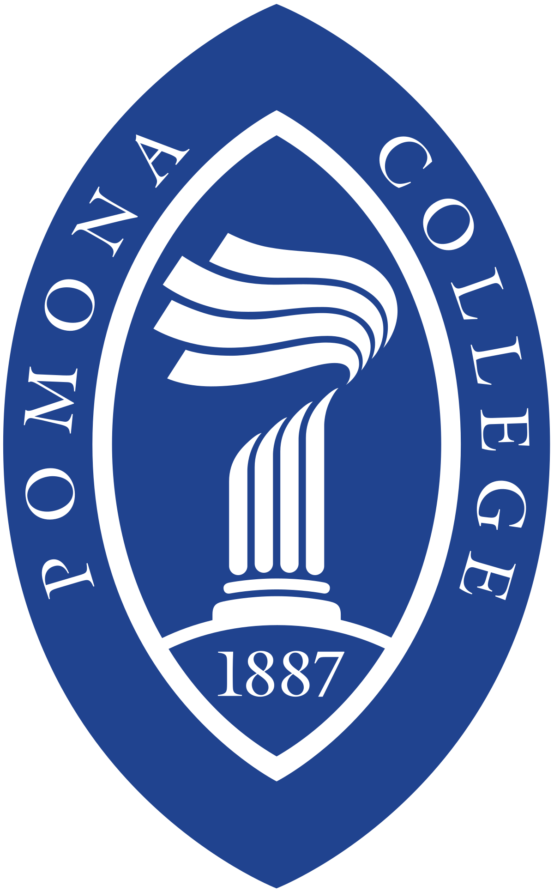
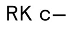

Sophy Figaroa
Education
Pomona College
B.A. Computer Science & Media Studies
Claremont, CA
GPA: 3.84 / 4.00
Relevant Coursework: Machine Learning, Economic Statistics, Human-Centered Design, Data Visualization, Big Data
May 2026
Vrije Universiteit Amsterdam
Foundations of International Business Management and Creative Coding
Amsterdam, Netherlands
Grade: 8.5 / 10
Summer 2023
Skills
Technical
Python, Java, JavaScript, SQL, P5.js, Three.js, A-Frame, D3.js, HTML/CSS, Git
Product & Strategy
Roadmapping, Stakeholder Management, PRDs, Rapid Prototyping, User Interviews, Market Research, Feature Prioritization
Data & Design
Power BI, Microsoft Excel, Figma, Stata
Languages
Papiamento (Fluent) · Dutch (Professional Working) · Spanish (Conversational) · French (Basic)
Relevant Work Experience

- Developed Kitme’s first product roadmap spanning 30+ existing and upcoming features, auditing 6 core product experiences and analyzing 5 competitors across 20+ comparable features to identify usability gaps, market opportunities, and product priorities.
- Drove feature development from discovery through launch, authoring 6 PRDs and building 6+ interactive prototypes while coordinating 5 engineers, 1 designer, and 4 marketing/GTM stakeholders; partnered with leadership on product strategy and shipped a redesigned search experience within 2 weeks.
- Translated user feedback and product research into 6+ consumer-facing features and improvements across AI styling, marketplace discovery, moodboards, and closet digitization; conducted 3 user interviews/feedback sessions to inform product decisions.

AIB'" />- Built the corporate finance team's first analytics framework in Power BI, integrating 10+ macroeconomic indicators (FX rates, interest rates, GDP growth) into loan-pricing reporting. Replaced manual Excel prep with reusable M Query and SQL connectors, cutting monthly turnaround by 50% and saving 2+ hours per cycle.
- Analyzed core banking system migration requirements — including cloud feasibility, integration architecture, and vendor assessments — to support executive selection of a new core banking vendor for an acquired commercial bank.

- Defined core product features (multi-level abstraction, precision controls) for a novel embroidery design platform, driving a prioritized 5+ feature roadmap from 10+ user need interviews, by partnering cross-functionally with researchers, designers, and engineers in weekly research-to-spec syncs.
- Owned 4+ iterative Figma and Procreate sketch rounds for the embroidery-tool interface, producing a shared design system handed off to engineering, by running design critique sessions with developers and revising wireframes based on user testing feedback.

- Developed interactive 2D, 3D, and time-based visualizations of high-rise earthquake responses for Caltech and JPL structural engineers, producing a tool adopted by 5+ researchers to assess seismic vulnerabilities, by processing multi-gigabyte displacement datasets in Python and rendering via D3.js and Three.js.
- Co-led product discovery sessions with Caltech and JPL principal investigators across the 6-month residency, shipping 5+ feature iterations that the structural engineering lab adopted into its analysis workflow, by turning PI feedback into structured prototype tickets validated against engineering analysis workflows.

PC'" />- • Mentored 30+ undergraduates across 4 semesters of Intro to CS and Theory of Computation, by hosting weekly office hours covering Python debugging, automata theory, and algorithmic problem-solving.

RK'" />- Analyzed media coverage and compiled weekly performance reports for 13 fashion brand clients, driving a 15% lift in earned media impressions and refining 3+ press-pitch angles per client, by tracking placement metrics in Fashion GPS and Microsoft Excel.
Clubs & Projects
- Investigated Estonia's e-government data exchange network (X-Road) through interviews with 2 government officials and review of technical documentation, documenting the system's secure, interoperable architecture and highlighting how similar solutions can enable small states to build digital societies with limited resources.
- Analyzed annual reports and pitched 5 consumer companies, providing strategic recommendations on long-term growth prospects to guide investment decisions for $1.25M of Pomona College's Endowment.